之前简单的使用了elasticsearch的搜索功能，这里深入探究elasticsearch的搜索过滤，以及页面回显：
- 了解过滤功能的基本思路
- 实现分类和品牌展示
- 了解规格参数展示
- 实现过滤条件筛选
- 实现已选过滤项回显
- 实现取消选择过滤项
1.过滤功能分析
首先看下页面要实现的效果：
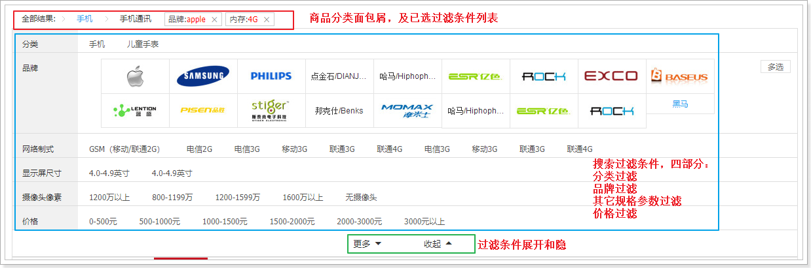
整个过滤部分有3块：
- 顶部的导航，已经选择的过滤条件展示：
- 商品分类面包屑，根据用户选择的商品分类变化
- 其它已选择过滤参数
- 过滤条件展示，又包含3部分
- 商品分类展示
- 品牌展示
- 其它规格参数
- 展开或收起的过滤条件的按钮
顶部导航要展示的内容跟用户选择的过滤条件有关。
- 比如用户选择了某个商品分类，则面包屑中才会展示具体的分类
- 比如用户选择了某个品牌，列表中才会有品牌信息。
所以，这部分需要依赖第二部分：过滤条件的展示和选择。因此我们先不着急去做。
展开或收起的按钮是否显示，取决于过滤条件有多少，如果很少，那么就没必要展示。所以也是跟第二部分的过滤条件有关。
这样分析来看，我们必须先做第二部分：过滤条件展示。
2.生成分类和品牌过滤
先来看分类和品牌。在我们的数据库中已经有所有的分类和品牌信息。在这个位置，是不是把所有的分类和品牌信息都展示出来呢？
显然不是，用户搜索的条件会对商品进行过滤，而在搜索结果中，不一定包含所有的分类和品牌，直接展示出所有商品分类，让用户选择显然是不合适的。
无论是分类信息，还是品牌信息，都应该从搜索的结果商品中进行聚合得到。
2.1.扩展返回的结果
原来，我们返回的结果是PageResult对象，里面只有total、totalPage、items3个属性。但是现在要对商品分类和品牌进行聚合，数据显然不够用，我们需要对返回的结果进行扩展，添加分类和品牌的数据。
那么问题来了：以什么格式返回呢？
看页面：
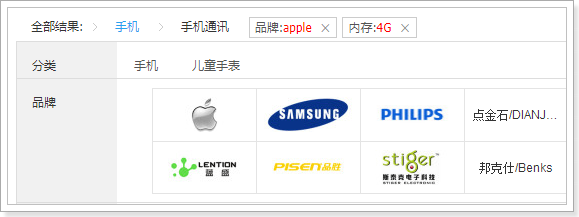
分类：页面显示了分类名称，但背后肯定要保存id信息。所以至少要有id和name
品牌：页面展示的有logo，有文字，当然肯定有id，基本上是品牌的完整数据
我们新建一个类，继承PageResult，然后扩展两个新的属性：分类集合和品牌集合：
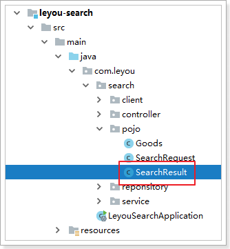
public class SearchResult extends PageResult<Goods> {
private List<Map<String, Object>> categories;
private List<Brand> brands;
public SearchResult() {
}
public SearchResult(List<Map<String, Object>> categories, List<Brand> brands) {
this.categories = categories;
this.brands = brands;
}
public SearchResult(List<Goods> items, Long total, List<Map<String, Object>> categories, List<Brand> brands) {
super(items, total);
this.categories = categories;
this.brands = brands;
}
public SearchResult(List<Goods> items, Long total, Integer totalPage, List<Map<String, Object>> categories, List<Brand> brands) {
super(items, total, totalPage);
this.categories = categories;
this.brands = brands;
}
public List<Map<String, Object>> getCategories() {
return categories;
}
public void setCategories(List<Map<String, Object>> categories) {
this.categories = categories;
}
public List<Brand> getBrands() {
return brands;
}
public void setBrands(List<Brand> brands) {
this.brands = brands;
}
}
2.2.聚合商品分类和品牌
我们修改搜索的业务逻辑，对分类和品牌聚合。
因为索引库中只有id，所以我们根据id聚合，然后再根据id去查询完整数据。
所以，商品微服务需要提供一个接口：根据品牌id集合，批量查询品牌。
修改SearchService：
public SearchResult search(SearchRequest request) {
// 判断查询条件
if (StringUtils.isBlank(request.getKey())) {
// 返回默认结果集
return null;
}
// 初始化自定义查询构建器
NativeSearchQueryBuilder queryBuilder = new NativeSearchQueryBuilder();
// 添加查询条件
queryBuilder.withQuery(QueryBuilders.matchQuery("all", request.getKey()).operator(Operator.AND));
// 添加结果集过滤，只需要：id,subTitle, skus
queryBuilder.withSourceFilter(new FetchSourceFilter(new String[]{"id", "subTitle", "skus"}, null));
// 获取分页参数
Integer page = request.getPage();
Integer size = request.getSize();
// 添加分页
queryBuilder.withPageable(PageRequest.of(page - 1, size));
String categoryAggName = "categories";
String brandAggName = "brands";
queryBuilder.addAggregation(AggregationBuilders.terms(categoryAggName).field("cid3"));
queryBuilder.addAggregation(AggregationBuilders.terms(brandAggName).field("brandId"));
// 执行搜索，获取搜索的结果集
AggregatedPage<Goods> goodsPage = (AggregatedPage<Goods>)this.goodsReponsitory.search(queryBuilder.build());
// 解析聚合结果集
List<Map<String, Object>> categories = getCategoryAggResult(goodsPage.getAggregation(categoryAggName));
List<Brand> brands = getBrandAggResult(goodsPage.getAggregation(brandAggName));
// 封装成需要的返回结果集
return new SearchResult(goodsPage.getContent(), goodsPage.getTotalElements(), goodsPage.getTotalPages(), categories, brands);
}
/**
* 解析品牌聚合结果集
* @param aggregation
* @return
*/
private List<Brand> getBrandAggResult(Aggregation aggregation) {
// 处理聚合结果集
LongTerms terms = (LongTerms)aggregation;
// 获取所有的品牌id桶
List<LongTerms.Bucket> buckets = terms.getBuckets();
// 定义一个品牌集合，搜集所有的品牌对象
List<Brand> brands = new ArrayList<>();
// 解析所有的id桶，查询品牌
buckets.forEach(bucket -> {
Brand brand = this.brandClient.queryBrandById(bucket.getKeyAsNumber().longValue());
brands.add(brand);
});
return brands;
// 解析聚合结果集中的桶，把桶的集合转化成id的集合
// List<Long> brandIds = terms.getBuckets().stream().map(bucket -> bucket.getKeyAsNumber().longValue()).collect(Collectors.toList());
// 根据ids查询品牌
//return brandIds.stream().map(id -> this.brandClient.queryBrandById(id)).collect(Collectors.toList());
// return terms.getBuckets().stream().map(bucket -> this.brandClient.queryBrandById(bucket.getKeyAsNumber().longValue())).collect(Collectors.toList());
}
/**
* 解析分类
* @param aggregation
* @return
*/
private List<Map<String,Object>> getCategoryAggResult(Aggregation aggregation) {
// 处理聚合结果集
LongTerms terms = (LongTerms)aggregation;
// 获取所有的分类id桶
List<LongTerms.Bucket> buckets = terms.getBuckets();
// 定义一个品牌集合，搜集所有的品牌对象
List<Map<String, Object>> categories = new ArrayList<>();
List<Long> cids = new ArrayList<>();
// 解析所有的id桶，查询品牌
buckets.forEach(bucket -> {
cids.add(bucket.getKeyAsNumber().longValue());
});
List<String> names = this.categoryClient.queryNamesByIds(cids);
for (int i = 0; i < cids.size(); i++) {
Map<String, Object> map = new HashMap<>();
map.put("id", cids.get(i));
map.put("name", names.get(i));
categories.add(map);
}
return categories;
}
测试：
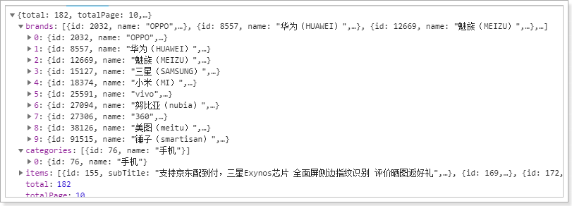
2.3.页面渲染数据
2.3.1.过滤参数数据结构
来看下页面的展示效果：
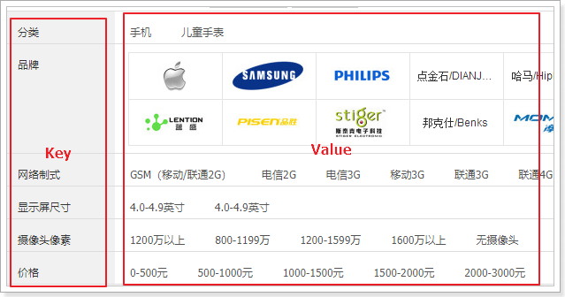
虽然分类、品牌内容都不太一样，但是结构相似，都是key和value的结构。
而且页面结构也极为类似：

所以，我们可以把所有的过滤条件放入一个数组中，然后在页面利用v-for遍历一次生成。
其基本结构是这样的：
[
{
k:"过滤字段名",
options:[{/*过滤字段值对象*/},{/*过滤字段值对象*/}]
}
]
我们先在data中定义数组：filters，等待组装过滤参数：
data: {
ly,
search:{
key: "",
page: 1
},
goodsList:[], // 接收搜索得到的结果
total: 0, // 总条数
totalPage: 0, // 总页数
filters:[] // 过滤参数集合
},
然后在查询搜索结果的回调函数中，对过滤参数进行封装：
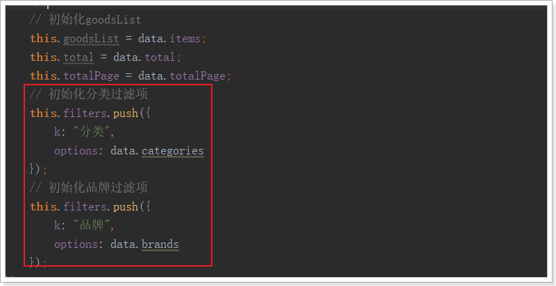
然后刷新页面，通过浏览器工具，查看封装的结果：
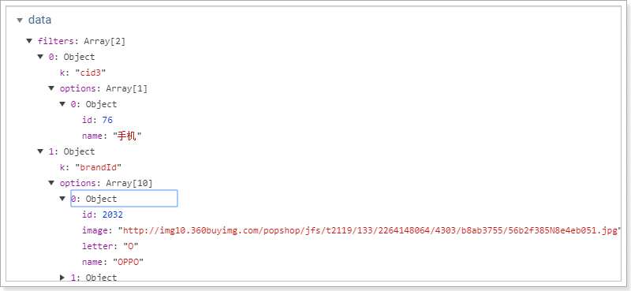
2.3.2.页面渲染数据
首先看页面原来的代码：
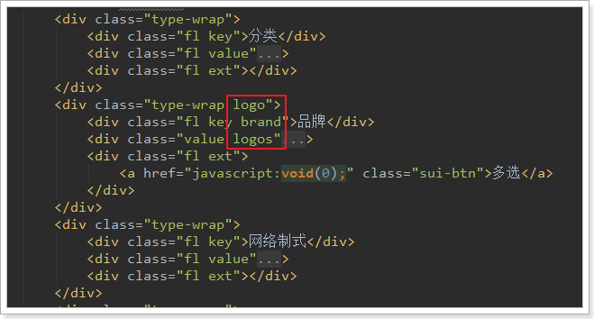
我们注意到，虽然页面元素是一样的，但是品牌会比其它搜索条件多出一些样式，因为品牌是以图片展示。需要进行特殊处理。数据展示是一致的，我们采用v-for处理：
<div class="type-wrap" v-for="(f,i) in filters" :key="i" v-if="f.k !== '品牌'">
<div class="fl key">{{f.k}}</div>
<div class="fl value">
<ul class="type-list">
<li v-for="(option, j) in f.options" :key="j">
<a>{{option.name}}</a>
</li>
</ul>
</div>
<div class="fl ext"></div>
</div>
<div class="type-wrap logo" v-else>
<div class="fl key brand">{{f.k}}</div>
<div class="value logos">
<ul class="logo-list">
<li v-for="(option, j) in f.options" v-if="option.image">
<img :src="option.image" />
</li>
<li style="text-align: center" v-else>
<a style="line-height: 30px; font-size: 12px" href="#">{{option.name}}</a>
</li>
</ul>
</div>
<div class="fl ext">
<a href="javascript:void(0);" class="sui-btn">多选</a>
</div>
</div>
结果：
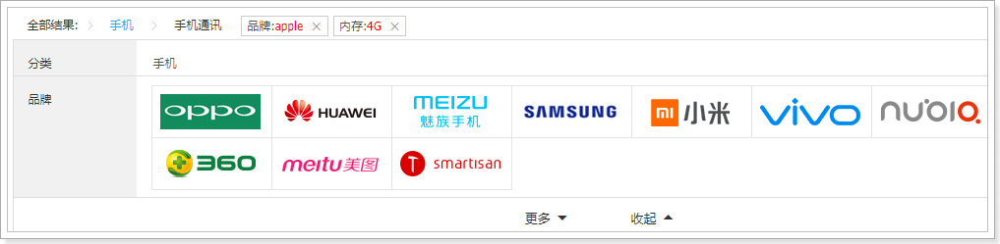
3.生成规格参数过滤
3.1.谋而后动
有四个问题需要先思考清楚：
- 什么时候显示规格参数过滤？ 分类只有一个
- 如何知道哪些规格需要过滤？
- 要过滤的参数，其可选值是如何获取的？
- 规格过滤的可选值，其数据格式怎样的？
什么情况下显示有关规格参数的过滤？
如果用户尚未选择商品分类，或者聚合得到的分类数大于1，那么就没必要进行规格参数的聚合。因为不同分类的商品，其规格是不同的。
因此，我们在后台需要对聚合得到的商品分类数量进行判断，如果等于1，我们才继续进行规格参数的聚合。
如何知道哪些规格需要过滤？
我们不能把数据库中的所有规格参数都拿来过滤。因为并不是所有的规格参数都可以用来过滤，参数的值是不确定的。
值的庆幸的是，我们在设计规格参数时，已经标记了某些规格可搜索，某些不可搜索。
因此，一旦商品分类确定，我们就可以根据商品分类查询到其对应的规格，从而知道哪些规格要进行搜索。
要过滤的参数，其可选值是如何获取的？
虽然数据库中有所有的规格参数，但是不能把一切数据都用来供用户选择。
与商品分类和品牌一样，应该是从用户搜索得到的结果中聚合，得到与结果品牌的规格参数可选值。
规格过滤的可选值，其数据格式怎样的？
我们直接看页面效果：
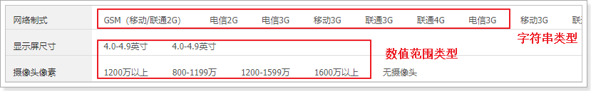
我们之前存储时已经将数据分段，恰好符合这里的需求
3.2.实战
接下来，我们就用代码实现刚才的思路。
总结一下，应该是以下几步：
- 1）用户搜索得到商品，并聚合出商品分类
- 2）判断分类数量是否等于1，如果是则进行规格参数聚合
- 3）先根据分类，查找可以用来搜索的规格
- 4）对规格参数进行聚合
- 5）将规格参数聚合结果整理后返回
3.2.1.扩展返回结果
返回结果中需要增加新数据，用来保存规格参数过滤条件。这里与前面的品牌和分类过滤的json结构类似：
[
{
"k":"规格参数名",
"options":["规格参数值","规格参数值"]
}
]
因此，在java中我们用List<Map<String, Object>>来表示。
public class SearchResult extends PageResult<Goods> {
private List<Map<String, Object>> categories;
private List<Brand> brands;
private List<Map<String, Object>> specs;
public SearchResult() {
}
public SearchResult(List<Map<String, Object>> categories, List<Brand> brands, List<Map<String, Object>> specs) {
this.categories = categories;
this.brands = brands;
this.specs = specs;
}
public SearchResult(List<Goods> items, Long total, List<Map<String, Object>> categories, List<Brand> brands, List<Map<String, Object>> specs) {
super(items, total);
this.categories = categories;
this.brands = brands;
this.specs = specs;
}
public SearchResult(List<Goods> items, Long total, Integer totalPage, List<Map<String, Object>> categories, List<Brand> brands, List<Map<String, Object>> specs) {
super(items, total, totalPage);
this.categories = categories;
this.brands = brands;
this.specs = specs;
}
public List<Map<String, Object>> getCategories() {
return categories;
}
public void setCategories(List<Map<String, Object>> categories) {
this.categories = categories;
}
public List<Brand> getBrands() {
return brands;
}
public void setBrands(List<Brand> brands) {
this.brands = brands;
}
public List<Map<String, Object>> getSpecs() {
return specs;
}
public void setSpecs(List<Map<String, Object>> specs) {
this.specs = specs;
}
}
3.2.2.判断是否需要聚合
首先，在聚合得到商品分类后，判断分类的个数，如果是1个则进行规格聚合：
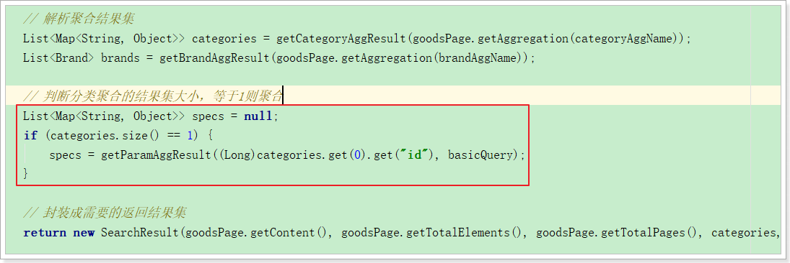
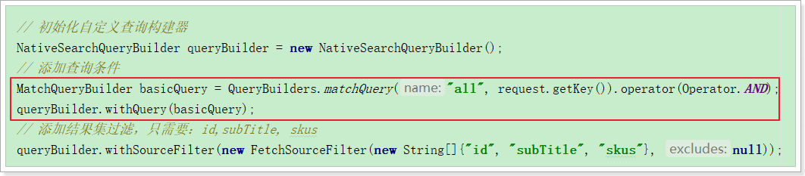
我们将聚合的代码抽取到了一个getParamAggResult方法中。
3.2.3.获取需要聚合的规格参数
然后，我们需要根据商品分类，查询所有可用于搜索的规格参数：
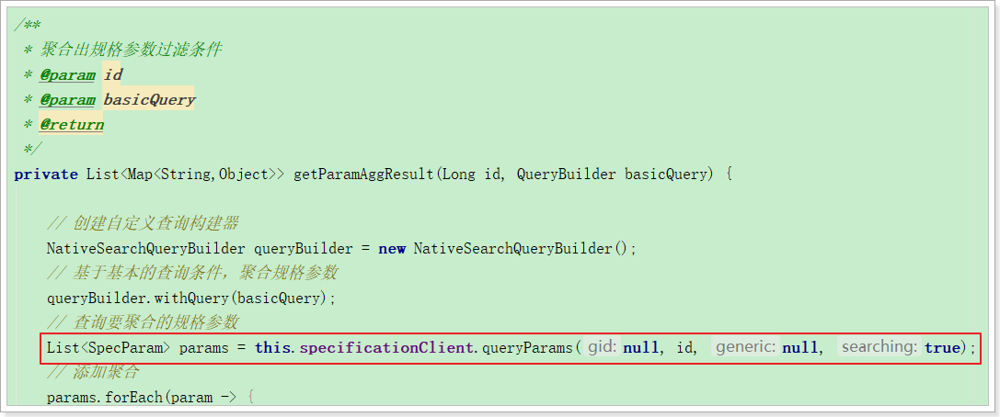
要注意的是，这里我们需要根据分类id查询规格，而规格参数接口需要从商品微服务提供
3.2.4.聚合规格参数
因为规格参数保存时不做分词，因此其名称会自动带上一个.keyword后缀：
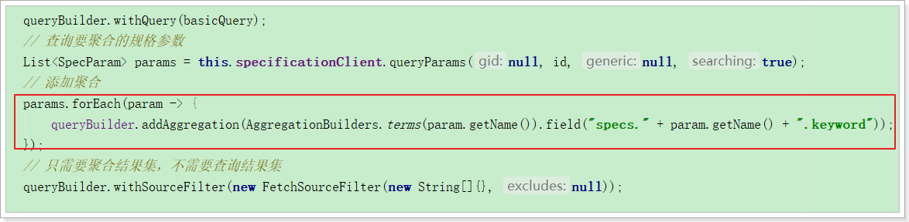
3.2.5.解析聚合结果
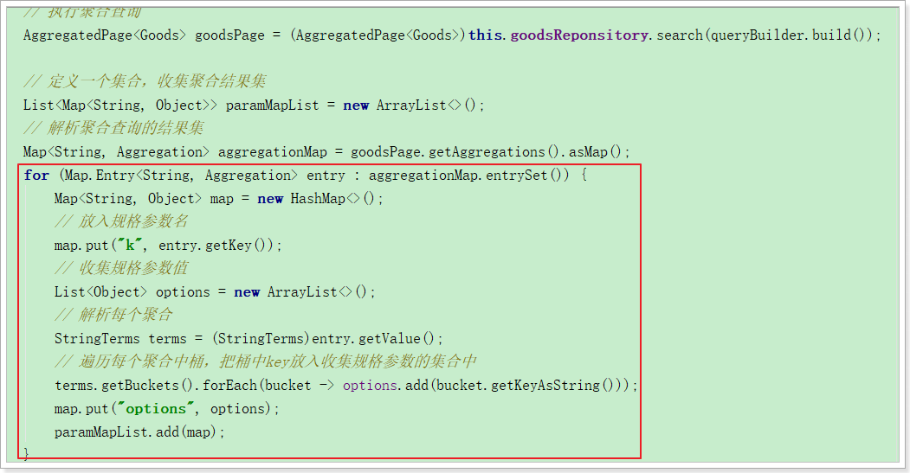
3.2.6.最终的完整代码
public SearchResult search(SearchRequest request) {
// 判断查询条件
if (StringUtils.isBlank(request.getKey())) {
// 返回默认结果集
return null;
}
// 初始化自定义查询构建器
NativeSearchQueryBuilder queryBuilder = new NativeSearchQueryBuilder();
// 添加查询条件
MatchQueryBuilder basicQuery = QueryBuilders.matchQuery("all", request.getKey()).operator(Operator.AND);
queryBuilder.withQuery(basicQuery);
// 添加结果集过滤，只需要：id,subTitle, skus
queryBuilder.withSourceFilter(new FetchSourceFilter(new String[]{"id", "subTitle", "skus"}, null));
// 获取分页参数
Integer page = request.getPage();
Integer size = request.getSize();
// 添加分页
queryBuilder.withPageable(PageRequest.of(page - 1, size));
String categoryAggName = "categories";
String brandAggName = "brands";
queryBuilder.addAggregation(AggregationBuilders.terms(categoryAggName).field("cid3"));
queryBuilder.addAggregation(AggregationBuilders.terms(brandAggName).field("brandId"));
// 执行搜索，获取搜索的结果集
AggregatedPage<Goods> goodsPage = (AggregatedPage<Goods>)this.goodsReponsitory.search(queryBuilder.build());
// 解析聚合结果集
List<Map<String, Object>> categories = getCategoryAggResult(goodsPage.getAggregation(categoryAggName));
List<Brand> brands = getBrandAggResult(goodsPage.getAggregation(brandAggName));
// 判断分类聚合的结果集大小，等于1则聚合
List<Map<String, Object>> specs = null;
if (categories.size() == 1) {
specs = getParamAggResult((Long)categories.get(0).get("id"), basicQuery);
}
// 封装成需要的返回结果集
return new SearchResult(goodsPage.getContent(), goodsPage.getTotalElements(), goodsPage.getTotalPages(), categories, brands, specs);
}
/**
* 聚合出规格参数过滤条件
* @param id
* @param basicQuery
* @return
*/
private List<Map<String,Object>> getParamAggResult(Long id, QueryBuilder basicQuery) {
// 创建自定义查询构建器
NativeSearchQueryBuilder queryBuilder = new NativeSearchQueryBuilder();
// 基于基本的查询条件，聚合规格参数
queryBuilder.withQuery(basicQuery);
// 查询要聚合的规格参数
List<SpecParam> params = this.specificationClient.queryParams(null, id, null, true);
// 添加聚合
params.forEach(param -> {
queryBuilder.addAggregation(AggregationBuilders.terms(param.getName()).field("specs." + param.getName() + ".keyword"));
});
// 只需要聚合结果集，不需要查询结果集
queryBuilder.withSourceFilter(new FetchSourceFilter(new String[]{}, null));
// 执行聚合查询
AggregatedPage<Goods> goodsPage = (AggregatedPage<Goods>)this.goodsReponsitory.search(queryBuilder.build());
// 定义一个集合，收集聚合结果集
List<Map<String, Object>> paramMapList = new ArrayList<>();
// 解析聚合查询的结果集
Map<String, Aggregation> aggregationMap = goodsPage.getAggregations().asMap();
for (Map.Entry<String, Aggregation> entry : aggregationMap.entrySet()) {
Map<String, Object> map = new HashMap<>();
// 放入规格参数名
map.put("k", entry.getKey());
// 收集规格参数值
List<Object> options = new ArrayList<>();
// 解析每个聚合
StringTerms terms = (StringTerms)entry.getValue();
// 遍历每个聚合中桶，把桶中key放入收集规格参数的集合中
terms.getBuckets().forEach(bucket -> options.add(bucket.getKeyAsString()));
map.put("options", options);
paramMapList.add(map);
}
return paramMapList;
}
3.2.7.测试结果

3.3.页面渲染
3.3.1.渲染规格过滤条件
首先把后台传递过来的specs添加到filters数组：
要注意：分类、品牌的option选项是对象，里面有name属性，而specs中的option是简单的字符串，所以需要进行封装，变为相同的结构：
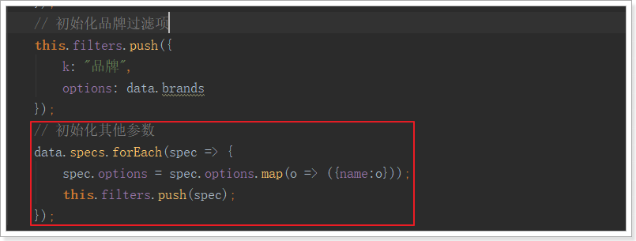
最后的结果：

3.3.2.展示或收起过滤条件
是不是感觉显示的太多了，我们可以通过按钮点击来展开和隐藏部分内容：

我们在data中定义变量，记录展开或隐藏的状态：
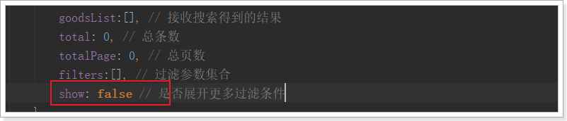
然后在按钮绑定点击事件，以改变show的取值：

在展示规格时，对show进行判断：

OK！
4.过滤条件的筛选
当我们点击页面的过滤项，要做哪些事情？
- 把过滤条件保存在search对象中（watch监控到search变化后就会发送到后台）
- 在页面顶部展示已选择的过滤项
- 把商品分类展示到顶部面包屑
4.1.保存过滤项
4.1.1.定义属性
我们把已选择的过滤项保存在search中：
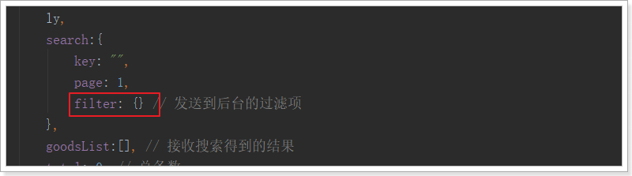
要注意，在created构造函数中会对search进行初始化，所以要在构造函数中对filter进行初始化：
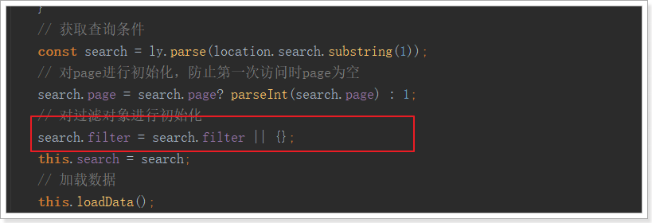
search.filter是一个对象，结构：
{
"过滤项名":"过滤项值"
}
4.1.2.绑定点击事件
给所有的过滤项绑定点击事件：

要注意，点击事件传2个参数：
- k：过滤项的key
- option：当前过滤项对象
在点击事件中，保存过滤项到selectedFilter：
selectFilter(k, o){
const obj = {};
Object.assign(obj, this.search);
if(k === '分类' || k === '品牌'){
o = o.id;
}
obj.filter[k] = o.name || o;
this.search = obj;
}
另外，这里search对象中嵌套了filter对象，请求参数格式化时需要进行特殊处理，修改common.js中的一段代码：
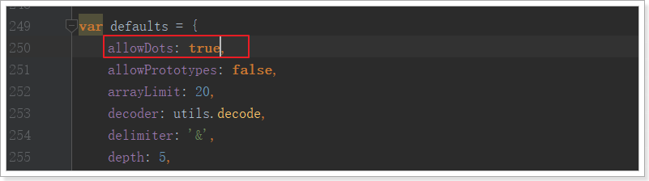
我们刷新页面，点击后通过浏览器功能查看search.filter的属性变化：
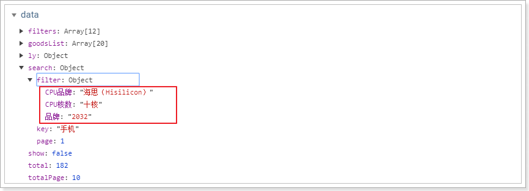
并且，此时浏览器地址也发生了变化：
http://www.leyou.com/search.html?key=%E6%89%8B%E6%9C%BA&page=1&filter.%E5%93%81%E7%89%8C=2032&filter.CPU%E5%93%81%E7%89%8C=%E6%B5%B7%E6%80%9D%EF%BC%88Hisilicon%EF%BC%89&filter.CPU%E6%A0%B8%E6%95%B0=%E5%8D%81%E6%A0%B8
网络请求也正常发出：

4.2.后台添加过滤条件
既然请求已经发送到了后台，那接下来我们就在后台去添加这些条件：
4.2.1.拓展请求对象
我们需要在请求类：SearchRequest中添加属性，接收过滤属性。过滤属性都是键值对格式，但是key不确定，所以用一个map来接收即可。
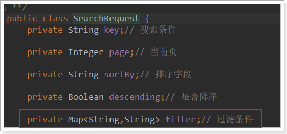
4.2.2.添加过滤条件
目前，我们的基本查询是这样的：
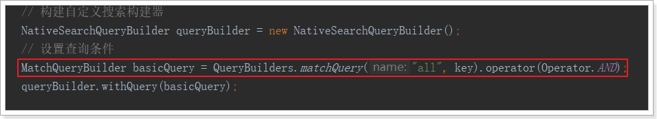
现在，我们要把页面传递的过滤条件也加入进去。
因此不能在使用普通的查询，而是要用到BooleanQuery，基本结构是这样的：
GET /heima/_search
{
"query":{
"bool":{
"must":{ "match": { "title": "小米手机",operator:"and"}},
"filter":{
"range":{"price":{"gt":2000.00,"lt":3800.00}}
}
}
}
}
所以，我们对原来的基本查询进行改造：（SearchService中的search方法）
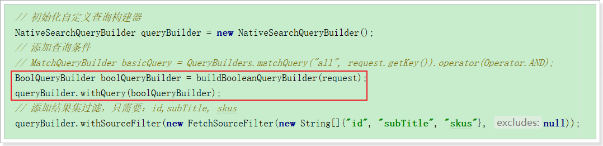
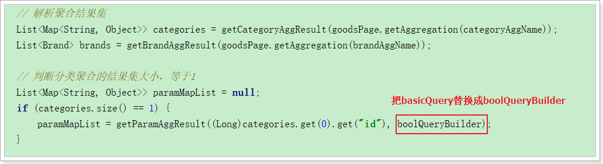
因为比较复杂，我们将其封装到一个方法中：
/**
* 构建bool查询构建器
* @param request
* @return
*/
private BoolQueryBuilder buildBooleanQueryBuilder(SearchRequest request) {
BoolQueryBuilder boolQueryBuilder = QueryBuilders.boolQuery();
// 添加基本查询条件
boolQueryBuilder.must(QueryBuilders.matchQuery("all", request.getKey()).operator(Operator.AND));
// 添加过滤条件
if (CollectionUtils.isEmpty(request.getFilter())){
return boolQueryBuilder;
}
for (Map.Entry<String, Object> entry : request.getFilter().entrySet()) {
String key = entry.getKey();
// 如果过滤条件是“品牌”, 过滤的字段名：brandId
if (StringUtils.equals("品牌", key)) {
key = "brandId";
} else if (StringUtils.equals("分类", key)) {
// 如果是“分类”，过滤字段名：cid3
key = "cid3";
} else {
// 如果是规格参数名，过滤字段名：specs.key.keyword
key = "specs." + key + ".keyword";
}
boolQueryBuilder.filter(QueryBuilders.termQuery(key, entry.getValue()));
}
return boolQueryBuilder;
}
其它不变。
4.3.页面测试
我们先不点击过滤条件，直接搜索手机：

总共184条
接下来，我们点击一个过滤条件：

得到的结果：

5.页面展示选择的过滤项
5.1.商品分类面包屑
当用户选择一个商品分类以后，我们应该在过滤模块的上方展示一个面包屑，把三级商品分类都显示出来。

用户选择的商品分类就存放在search.filter中，但是里面只有第三级分类的id：cid3
我们需要根据它查询出所有三级分类的id及名称
5.1.1.提供查询分类接口
我们在商品微服务中提供一个根据三级分类id查询1~3级分类集合的方法：
Controller
/**
* 根据3级分类id，查询1~3级的分类
* @param id
* @return
*/
@GetMapping("all/level")
public ResponseEntity<List<Category>> queryAllByCid3(@RequestParam("id") Long id){
List<Category> list = this.categoryService.queryAllByCid3(id);
if (list == null || list.size() < 1) {
return new ResponseEntity<>(HttpStatus.NOT_FOUND);
}
return ResponseEntity.ok(list);
}
Service
public List<Category> queryAllByCid3(Long id) {
Category c3 = this.categoryMapper.selectByPrimaryKey(id);
Category c2 = this.categoryMapper.selectByPrimaryKey(c3.getParentId());
Category c1 = this.categoryMapper.selectByPrimaryKey(c2.getParentId());
return Arrays.asList(c1,c2,c3);
}
测试：

5.1.2.页面展示面包屑
后台提供了接口，下面的问题是，我们在哪里去查询接口？
大家首先想到的肯定是当用户点击以后。
但是我们思考一下：用户点击以后，就会重新发起请求，页面刷新，那么你渲染的结果就没了。
因此，应该是在页面重新加载完毕后，此时因为过滤条件中加入了商品分类的条件，所以查询的结果中只有1个分类。
我们判断商品分类是否只有1个，如果是，则查询三级商品分类，添加到面包屑即可。

渲染：

刷新页面：
5.2.其它过滤项
接下来，我们需要在页面展示用户已选择的过滤项，如图：

我们知道，所有已选择过滤项都保存在search.filter中，因此在页面遍历并展示即可。
但这里有个问题，filter中数据的格式：

基本有四类数据：
- 商品分类：这个不需要展示，分类展示在面包屑位置
- 品牌：这个要展示，但是其key和值不合适，我们不能显示一个id在页面。需要找到其name值
- 数值类型规格：这个展示的时候，需要把单位查询出来
- 非数值类型规格：这个直接展示其值即可
因此，我们在页面上这样处理：
<!--已选择过滤项-->
<ul class="tags-choose">
<li class="tag" v-for="(v,k) in search.filter" v-if="k !== 'cid3'" :key="k">
{{k === 'brandId' ? '品牌' : k}}:<span style="color: red">{{getFilterValue(k,v)}}</span></span>
<i class="sui-icon icon-tb-close"></i>
</li>
</ul>
- 判断如果
k === 'cid3'说明是商品分类，直接忽略 - 判断
k === 'brandId'说明是品牌，页面显示品牌，其它规格则直接显示k的值 - 值的处理比较复杂，我们用一个方法
getFilterValue(k,v)来处理，调用时把k和v都传递
方法内部：
getFilterValue(k,v){
// 如果没有过滤参数，我们跳过展示
if(!this.filters || this.filters.length === 0){
return null;
}
let filter = null;
// 判断是否是品牌
if(k === 'brandId'){
// 返回品牌名称
return this.filters.find(f => f.k === 'brandId').options[0].name;
}
return v;
}
然后刷新页面，即可看到效果：

5.3.隐藏已经选择的过滤项
现在，我们已经实现了已选择过滤项的展示，但是你会发现一个问题：
已经选择的过滤项，在过滤列表中依然存在：

这些已经选择的过滤项，应该从列表中移除。
怎么做呢？
你必须先知道用户选择了什么。用户选择的项保存在search.filter中：

我们可以编写一个计算属性，把filters中的 已经被选择的key过滤掉：
computed:{
remainFilters(){
const keys = Object.keys(this.search.filter);
if(this.search.filter.cid3){
keys.push("cid3")
}
if(this.search.filter.brandId){
keys.push("brandId")
}
return this.filters.filter(f => !keys.includes(f.k));
}
}
然后页面不再直接遍历filters，而是遍历remainFilters

刷新页面：
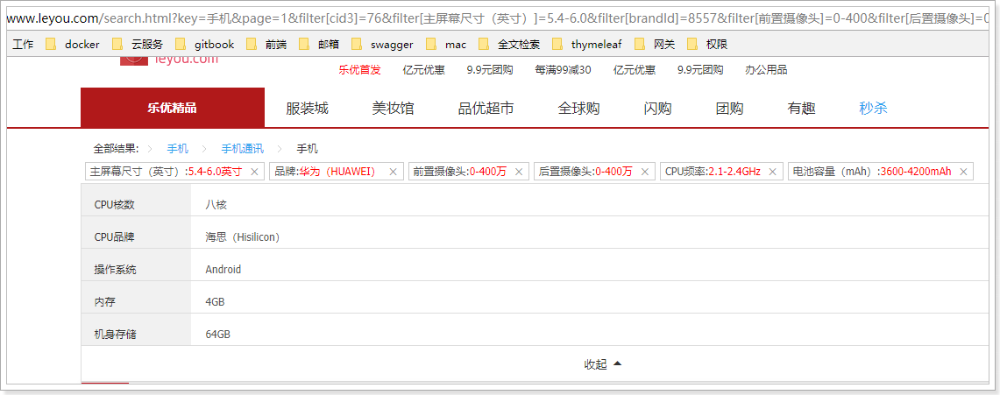
最后发现，还剩下一堆没选过的。但是都只有一个可选项，此时再过滤没有任何意义，应该隐藏，所以，在刚才的过滤条件中，还应该添加一条：如果只剩下一个可选项，不显示


6.取消过滤项
我们能够看到，每个过滤项后面都有一个小叉，当点击后，应该取消对应条件的过滤。
思路非常简单：
- 给小叉绑定点击事件
- 点击后把过滤项从
search.filter中移除，页面会自动刷新，OK
绑定点击事件：
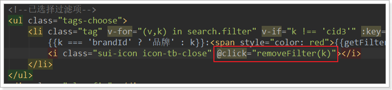
绑定点击事件时，把k传递过去，方便删除
删除过滤项
removeFilter(k){
this.search.filter[k] = null;
}
7.优化
搜索系统需要优化的点：
- 查询规格参数部分可以添加缓存
- 聚合计算interval变化频率极低，所以可以设计为定时任务计算（周期为天），然后缓存起来。
- elasticsearch本身有查询缓存，可以不进行优化
- 商品图片应该采用缩略图，减少流量，提高页面加载速度
- 图片采用延迟加载
- 图片还可以采用CDN服务器
- sku信息应该在页面异步加载，而不是放到索引库